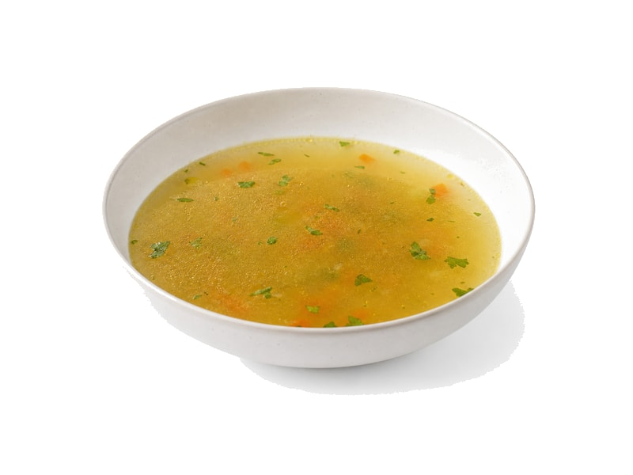

Zupy
Ramen z bulionem (miska)
Ramen z bulionem (miska): 5 g białka, 95 kcal, 12 g węglowodanów i 3 g tłuszczu na 100 g. Kategoria: Zupy.
Kalorie95 kcalna 100 g
Białko / proteiny5 g
Węglowodany12 g
Tłuszcz3 g
Cena (szac.)~1,33 złza 100 g
Ceny zaktualizowano: maj 2026 (szacunek — ceny w popularnych supermarketach)
Porcja: porcja (450g)
| Kalorie | 428 kcal |
|---|---|
| Białko | 22.5 g |
| Węglowodany | 54 g |
| Tłuszcz | 13.5 g |
| Cena (szac.) | ~5,99 zł |
Szczegółowe składniki odżywcze na 100 g
| Wartość energetyczna (kalorie) | 95 kcal |
|---|---|
| Białko (proteiny) | 5 g |
| Węglowodany | 12 g |
| Tłuszcz | 3 g |
| Tłuszcze nasycone | 1 g |
| Tłuszcze nienasycone | 2 g |
| Witaminy i minerały | Sód, Potas, Witamina C |
| Współczynnik kcal / 1 g białka | 19.0 |
| Cena produktu (szac. za 100 g) | ~1,33 zł |
| Cena za 100 g białka (szac.) | ~26,62 zł |